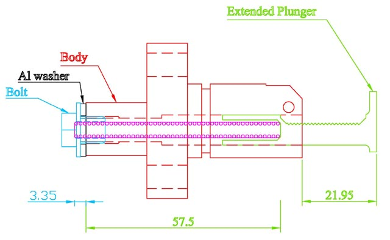

You've taken the measurements and done the calculations on the previous page, and found, to your horror, that you have only 1 or 2 mm of travel left. Or worse, there's none left, and you've noticed the engine is noisier than you think it should be. (Or worst, you haven't noticed!)
What now?
|  | |
From the tensioner diagram, you'll notice that the existing bolt doesn't extend the full depth of the thread in the
tensioner body. From memory, that depth is 10 mm. This extra thread can be used to move the head of the spring closer to the
cam chain.
| Max. Operating Depth | = | Spring Length | - | Spring length to provide force to overcome ratchet | - | bolt bore depth |
| = | Spring Length | - | 1.3 | + | 4.7 | |
| Max. Operating Depth | = | Spring Length | + | 6.0 |
When installing a new cam chain, the minimum operating depth of the spring should be confirmed, under the new tensioner bolt. If the minimum operating depth of the spring is larger than the plunger depth, then the spring will bottom out, and force the plunger to move, placing undue stress on the new cam chain.
| Min. Operating Depth | = | Spring section | * | no. turns of the spring | + | bolt bore depth |
| = | 0.9 | * | no. turns | + | 4.7 | |
| (in my case) | = | 0.9 | * | 40 | + | 4.7 |
| = | 40.7 |